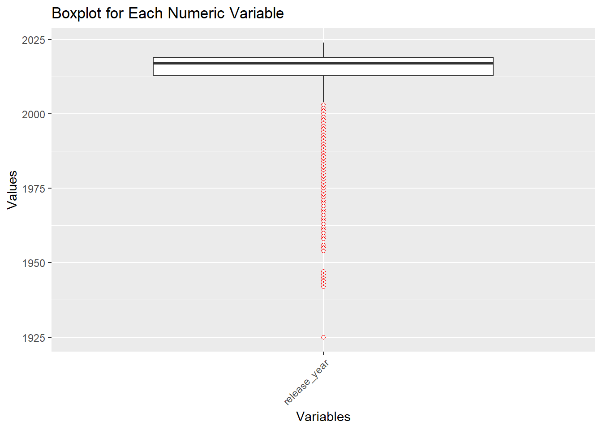
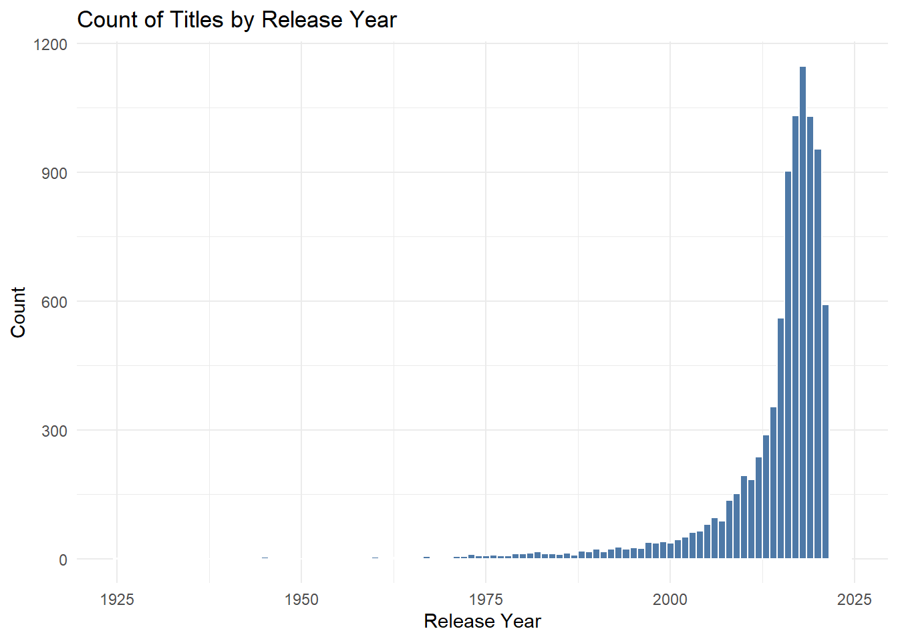
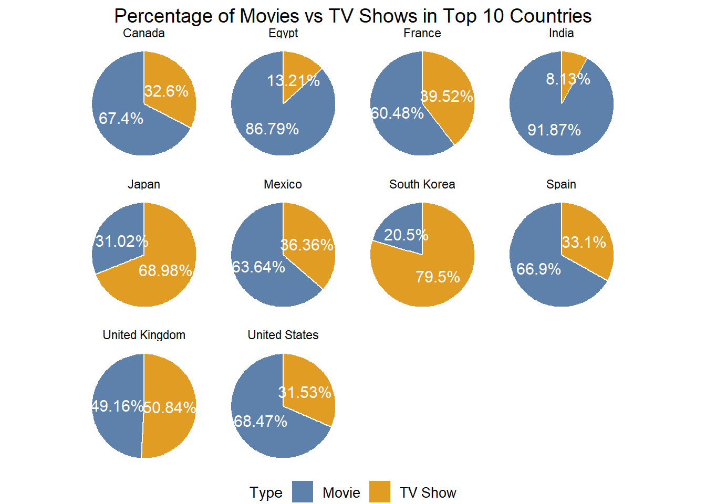
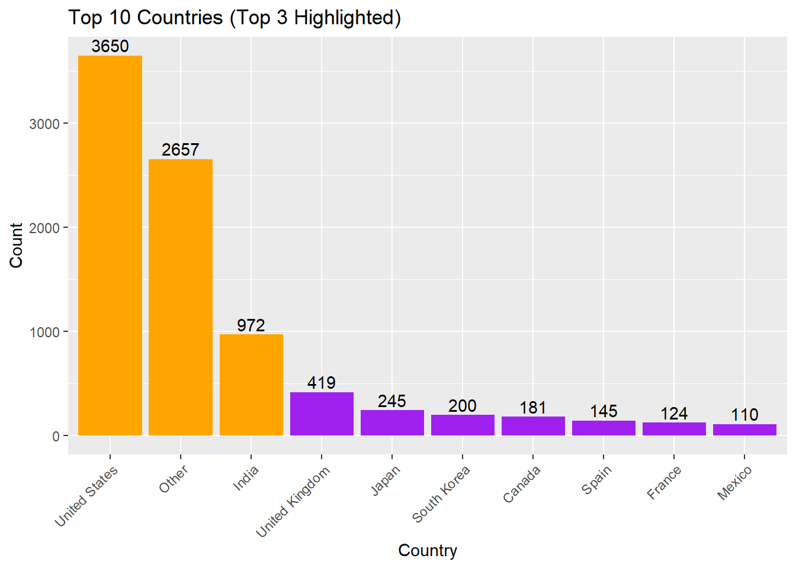
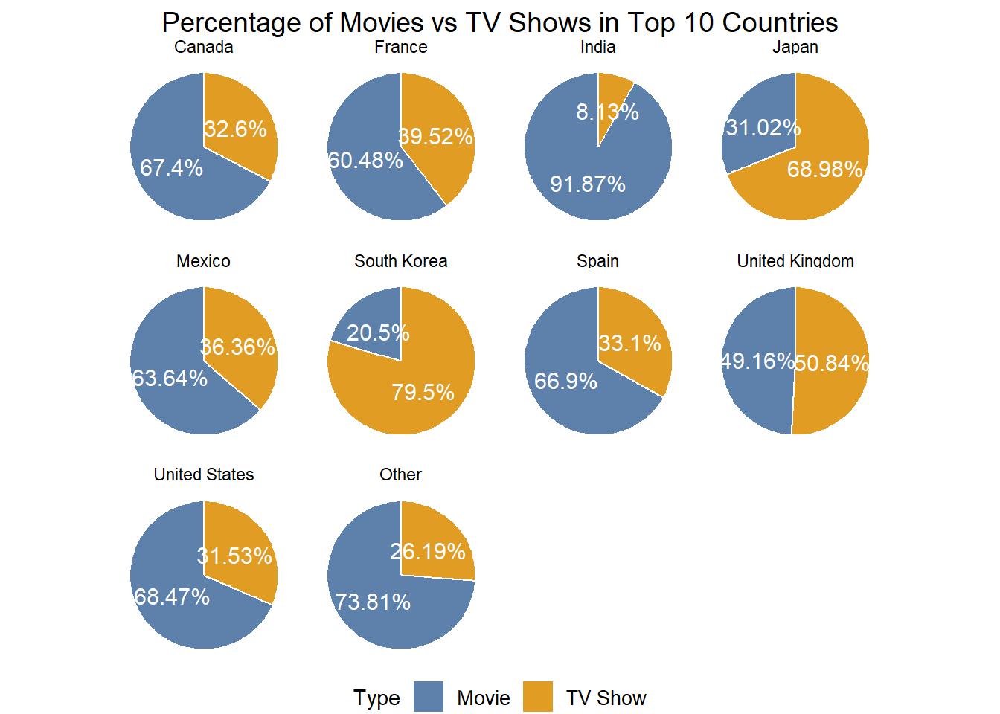
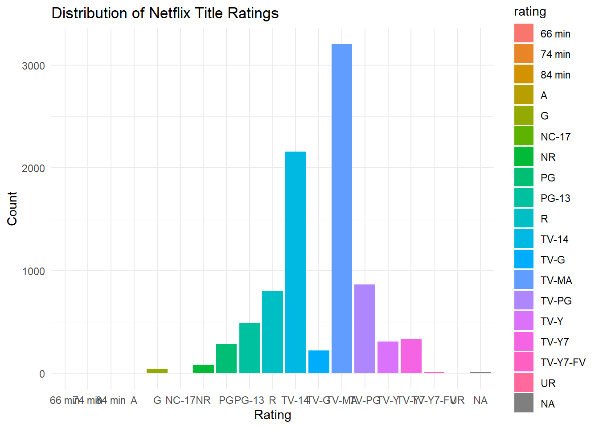
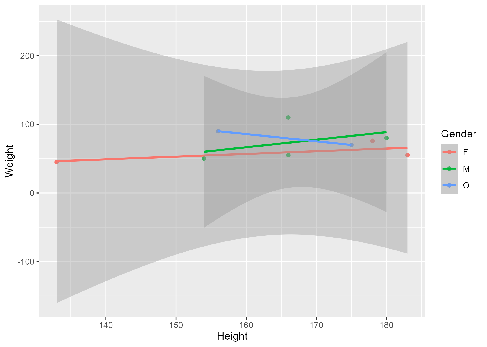
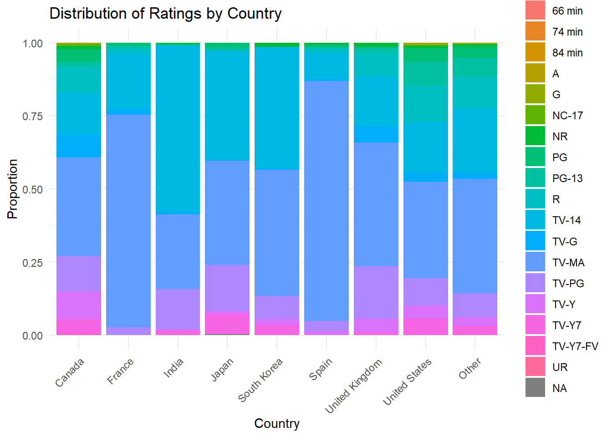

Warning: package 'dplyr' was built under R version 4.3.3Warning: package 'ggplot2' was built under R version 4.3.3Holly Milazzo
July 12, 2024
The structure below is one possible setup for a data analysis project (including the course project). For a manuscript, adjust as needed. You don’t need to have exactly these sections, but the content covering those sections should be addressed.
This uses MS Word as output format. See here for more information. You can switch #to other formats, like html or pdf. See the Quarto documentation for other formats.*/
Warning: package 'dplyr' was built under R version 4.3.3Warning: package 'ggplot2' was built under R version 4.3.3This study explores the hypothesis that the type of content (Movie or TV Show) and the country of origin influence the distribution of age ratings assigned to Netflix titles. Utilizing a detailed dataset containing information about Netflix titles, we conduct an extensive analysis involving data cleaning, exploratory data analysis, and statistical testing.
The intent of this analysis is to provide insights into how regional production practices and content types align with age rating distributions, offering valuable information for Netflix’s content acquisition and compliance strategies. This research highlights the importance of understanding content rating trends to better cater to diverse audiences and ensure appropriate content delivery.
Data is on Netflix Movies and TV Shows from Kaggle.com site. The description says: “The Netflix Titles dataset is a comprehensive compilation of movies and TV shows available on Netflix, covering various aspects such as the title type, director, cast, country of production, release year, rating, duration, genres (listed in), and a brief description. This dataset is instrumental for analyzing trends in Netflix content, understanding genre popularity, and examining the distribution of content across different regions and time periods”
The dataset contains 8,809 observations and the following 12 variables:
show_id: A unique identifier for each title.
type: The category of the title, which is either ‘Movie’ or ‘TV Show’
title: The name of the movie or TV show
director: The director(s) of the movie or TV show (Contains null values for some entries, especially TV shows where this information might not be applicable)
cast: The list of main actors/actresses in the title (Some entries might not have this information.)
country: The country or countries where the movie or TV show was produced.
date_added: The date the title was added to Netflix.
release_year: The year the movie or TV show was originally released.
rating: The age rating of the title.
duration: The duration of the title, in minutes for movies and seasons for TV shows
listed_in: The genres the title falls under.
description: A brief summary of the title.
State the research questions you plan to answer with this analysis.
“How do the type of content (Movie or TV Show) and the country of origin affect the distribution of age ratings on Netflix titles?”
This question focuses on understanding the relationship between content type, country of origin, and age ratings, which can provide valuable insights into regional production practices and content rating trends on Netflix
To cite other work (important everywhere, but likely happens first in introduction), make sure your references are in the #bibtex file specified in the YAML header above (here dataanalysis_template_references.bib) and have the right bibtex key. #Then you can include like this:
Examples of reproducible research projects can for instance be found in (McKay, Ebell, Billings, et al., 2020; McKay, Ebell, Dale, Shen, & Handel, 2020)
Describe your methods. That should describe the data, the cleaning processes, and the analysis approaches. You might want to provide a shorter description here and all the details in the supplement.
I will be using EDA initially and from there branching out into some hypothesis testing using Multinomial Logistic Regression to see if there is any association between country, content type, and rating.
I imported the data for Netflix Movies and TV Shows which was available on Kaggle.com site. My raw data file is available through file path folders: starter-analysis-exercise > data > raw-data > netflix_titles.xlsx
The file path to my code file for cleaning my dataset is: starter-analysis-exercise > code > processing-code > processingfile
First I imported the data…
here are some of the initial cleaning techniques and a few reasons why I chose to do them:
For the country column, I filled missing values with the mode (most frequently occurring country).
Converted the date_added to a Date format as a crucial step for any potential time series or date-related analysis.
Converted type to a factor since I am planning on performing statistical tests and/or modeling that may need categorical input features.
# Handling missing values
rawdata$director[is.na(rawdata$director)] <- "Unknown"
# Fill missing 'country' values with the mode (most frequent value)
mode_country <- names(sort(table(rawdata$country), decreasing = TRUE))[1]
rawdata$country[is.na(rawdata$country)] <- mode_country
# Safe conversion of date formats with error handling
rawdata$date_added <- as.Date(rawdata$date_added, format = "%m/%d/%Y")
if(any(is.na(rawdata$date_added))) {
warning("There were errors in date conversion. Check date formats.")
}Warning: There were errors in date conversion. Check date formats.# Standardizing categorical variables
rawdata$type <- as.factor(rawdata$type)
# Display the cleaned data
head(rawdata)# A tibble: 6 × 12
show_id type title director cast country date_added release_year rating
<chr> <fct> <chr> <chr> <chr> <chr> <date> <dbl> <chr>
1 s1 Movie Dick Jo… Kirsten… <NA> United… 2021-09-25 2020 PG-13
2 s2 TV Show Blood &… Unknown Ama … South … 2021-09-24 2021 TV-MA
3 s3 TV Show Ganglan… Julien … Sami… United… 2021-09-24 2021 TV-MA
4 s4 TV Show Jailbir… Unknown <NA> United… 2021-09-24 2021 TV-MA
5 s5 TV Show Kota Fa… Unknown Mayu… India 2021-09-24 2021 TV-MA
6 s6 TV Show Midnigh… Mike Fl… Kate… United… 2021-09-24 2021 TV-MA
# ℹ 3 more variables: duration <chr>, listed_in <chr>, description <chr>I also needed to do some clean up when it came to content ‘type’ as it included unwanted values…
show_id type title director
Length:8809 Movie :6132 Length:8809 Length:8809
Class :character TV Show :2677 Class :character Class :character
Mode :character William Wyler: 0 Mode :character Mode :character
cast country date_added release_year
Length:8809 Length:8809 Min. :2008-01-01 Min. :1925
Class :character Class :character 1st Qu.:2018-04-06 1st Qu.:2013
Mode :character Mode :character Median :2019-07-02 Median :2017
Mean :2019-05-17 Mean :2014
3rd Qu.:2020-08-19 3rd Qu.:2019
Max. :2024-04-05 Max. :2024
NA's :11 NA's :1
rating duration listed_in description
Length:8809 Length:8809 Length:8809 Length:8809
Class :character Class :character Class :character Class :character
Mode :character Mode :character Mode :character Mode :character
Write code that reads in the file and cleans it so it’s ready for analysis. Since this will be fairly long code for most datasets, it might be a good idea to have it in one or several R scripts. If that is the case, explain here briefly what kind of cleaning/processing you do, and provide more details and well documented code somewhere (e.g. as supplement in a paper). All materials, including files that contain code, should be commented well so everyone can follow along.
Explain anything related to your statistical analyses.
The relevant variables I’ll be using during my statistical analysis to determine how regional production practices and content types align with age rating distributions will be: Country, Type, and Rating.
Let’s double check if there is any other missing data in my cleaned_data before I perform my analysis… nothing significant in 3 variables I’ll be using.
# Calculate the number of missing values for each column in cleaned_data
missing_data_summary <- sapply(cleaned_data, function(x) sum(is.na(x)))
# Print the summary of missing data
print(missing_data_summary) show_id type title director cast country
0 0 0 0 825 0
date_added release_year rating duration listed_in description
11 1 5 4 1 1 I also want to check for any outliers as well…
# Create a boxplot for each numeric variable in the dataframe
numeric_vars <- sapply(cleaned_data, is.numeric)
if(any(numeric_vars)) {
# Filter only numeric columns
numeric_data <- cleaned_data[, numeric_vars]
# Melt the data for easy plotting with ggplot2
library(reshape2)
long_data <- melt(numeric_data)
# Plot
ggplot(long_data, aes(x = variable, y = value)) +
geom_boxplot(outlier.colour = "red", outlier.shape = 1) +
theme(axis.text.x = element_text(angle = 45, hjust = 1)) +
labs(title = "Boxplot for Each Numeric Variable", x = "Variables", y = "Values")
} else {
print("No numeric variables found for plotting.")
}Warning: package 'reshape2' was built under R version 4.3.3Warning: Removed 1 row containing non-finite outside the scale range
(`stat_boxplot()`).
Given my hypothesis, which aims to explore how the type of content (Movie or TV Show) and the country of origin influence the distribution of age ratings on Netflix titles, regression testing does not seem like the best testing method because I using 2 categorical variables (Type and Rating) as target variables. My ‘rating’ variable is not ordinal either which means we’d also leave out performing logistic regression.
I believe the best testing methods in this case are either Chi-square (to test independence) or Multinomial Logistic Regression. MLR would be useful since the ‘Rating’ has multiple categories without order and would allow me to model the probability of each rating category as a function of ‘Type’ and ‘Country’.
I will need install the following packages for the next part of my analysis
Initially, when I ran the model it gave an error due to the complexity in the number of parameters it created based on the variations of categories I have in my variables. ChatGPT recommended I use the code below to create a decay term for regularization, which helps to manage the complexity of the model by shrinking the regression coefficients.
With the convergence of my multinomial logistic regression as indicated by “converged” in the output below, the next steps involve interpreting the model’s results and using them to validate my hypothesis or make further decisions.
# Assuming 'Country' has many categories, we reduce them
cleaned_data$country <- fct_lump_n(cleaned_data$country, n = 10) # Keeps the top 10 countries, others lumped into "Other"
cleaned_data$country <- factor(cleaned_data$country)
# Fit the model with increased decay for regularization
fit <- multinom(type ~ country + rating, data = cleaned_data, MaxNWts = 10000, decay = 0.1)Warning in multinom(type ~ country + rating, data = cleaned_data, MaxNWts =
10000, : group 'William Wyler' is empty# weights: 29 (28 variable)
initial value 6102.467778
iter 10 value 4551.137216
iter 20 value 4300.674269
iter 30 value 4276.943332
final value 4276.909270
convergedNow to run my multinomial model….
# Ensure that 'Country', 'Type', and 'Rating' are factors
cleaned_data$country <- as.factor(cleaned_data$country)
cleaned_data$type <- as.factor(cleaned_data$type)
cleaned_data$rating <- as.factor(cleaned_data$rating)
# Multinomial logistic regression
multinom_model <- multinom(rating ~ country + type, data = cleaned_data)# weights: 252 (221 variable)
initial value 25446.832957
iter 10 value 18728.030041
iter 20 value 16906.955079
iter 30 value 15526.132442
iter 40 value 14980.668736
iter 50 value 14724.154902
iter 60 value 14656.735665
iter 70 value 14624.490886
iter 80 value 14615.654822
iter 90 value 14612.398803
iter 100 value 14611.228013
final value 14611.228013
stopped after 100 iterationsWarning in sqrt(diag(vc)): NaNs producedCall:
multinom(formula = rating ~ country + type, data = cleaned_data)
Coefficients:
(Intercept) countryEgypt countryFrance countryIndia countryJapan
74 min -1.813493 2.9754275 0.3956199 -0.9714214 2.41979551
84 min -1.813493 2.9754275 0.3956199 -0.9714214 2.41979551
A -1.813493 2.9754275 0.3956199 -0.9714214 2.41979551
G 5.117559 -3.6377154 -4.6556665 -5.1956130 -4.42089642
NC-17 5.293475 -0.7285485 -5.1558932 -7.6811791 -3.91040508
NR 5.969772 -2.3816946 -5.6716291 2.2264249 -4.66714238
PG 7.389822 -7.7808417 0.8624780 0.1309791 2.68664023
PG-13 6.411672 -4.3058335 1.8455658 1.7822731 3.37872073
R 8.081236 -8.5606599 0.8652298 -1.2221487 -9.56543245
TV-14 8.085485 9.1241640 2.6714935 4.9635913 3.86190160
TV-G 7.430619 5.4642930 0.9222056 1.4958886 -0.08943671
TV-MA 9.003829 7.3208905 3.1577765 3.2632319 3.01945227
TV-PG 7.943574 6.3842254 0.8702201 3.6965706 3.19144246
TV-Y 7.355051 -8.9476752 2.3120732 0.9286445 0.22410134
TV-Y7 6.693138 -5.4072775 1.7538064 2.6024231 3.02469907
TV-Y7-FV 5.172363 -0.8235049 -5.4307087 1.6013327 -4.59641820
UR -0.627117 2.4086825 8.8892483 -1.9515073 2.04209352
countryMexico countrySouth Korea countrySpain countryUnited Kingdom
74 min 0.9730047 2.7803449 0.6678208 2.2538170
84 min 0.9730047 2.7803449 0.6678208 2.2538170
A 0.9730047 2.7803449 0.6678208 2.2538170
G -3.9125398 -2.9078780 -5.4229899 -5.8633005
NC-17 -3.8296394 -3.0105907 -5.6584963 -5.0598829
NR 5.0036247 4.9109376 3.4881020 2.9320343
PG -8.5179746 -8.1423723 2.1294223 0.7227442
PG-13 3.2530670 -6.6138781 3.1111172 3.0830156
R 2.9514864 -9.0589952 2.1359756 2.8242029
TV-14 3.5870699 4.7420142 3.5198169 2.7279862
TV-G 2.3579226 0.8890635 1.5689083 2.1964467
TV-MA 4.5253938 3.9994634 4.8803234 2.8080144
TV-PG 2.9887764 3.2667348 2.6958972 2.9379047
TV-Y -9.3982700 1.8656819 2.0737436 1.6912606
TV-Y7 3.1197112 3.0544350 -10.4953965 0.9746520
TV-Y7-FV -4.0871792 -4.0443495 -5.8254463 -5.3494891
UR 0.3953846 2.6887892 -0.1288406 1.4823803
countryUnited States countryOther typeTV Show typeWilliam Wyler
74 min 2.4067979 1.6686629 -1.4146175 0
84 min 2.4067979 1.6686629 -1.4146175 0
A 2.4067979 1.6686629 -1.4146175 0
G -1.1608910 2.8067915 -5.1637780 0
NC-17 -4.7285893 0.2156647 -2.7012113 0
NR -1.8744889 2.7914691 0.9037756 0
PG -1.6546214 2.7519333 -7.2607091 0
PG-13 -0.1178885 4.2800944 -6.9351304 0
R -1.3716861 3.1313741 -2.1930341 0
TV-14 -1.5872989 3.4023549 3.3427349 0
TV-G -2.7097828 1.6531530 3.4271192 0
TV-MA -1.7967268 3.1202129 3.1682250 0
TV-PG -2.0547150 2.5757827 3.3006469 0
TV-Y -2.5339954 1.8800122 4.0074045 0
TV-Y7 -1.7246375 2.4683118 4.0533445 0
TV-Y7-FV -4.1470108 0.8800138 2.3830069 0
UR 1.2439358 6.1830410 -2.8364490 0
Std. Errors:
(Intercept) countryEgypt countryFrance countryIndia countryJapan
74 min 30.57980 1.94029326 88.62114 91.98723 58.969137
84 min 30.57980 1.94029307 88.62114 91.98723 58.969137
A 30.57980 1.94029309 88.62114 91.98723 58.969137
G 11.16170 1.74214107 49.47545 37.25970 51.685059
NC-17 11.15317 64.17328348 57.13409 97.41792 37.274176
NR 11.13089 96.09485455 51.75340 20.97707 35.402617
PG 11.11513 0.24626247 16.83676 20.97465 9.579189
PG-13 11.12405 3.59431522 16.84204 20.97359 9.592387
R 11.11243 0.22528698 16.82166 20.98391 3.337291
TV-14 11.11153 23.27198345 16.80902 20.96149 9.564357
TV-G 11.11309 23.28856090 16.82217 20.96475 9.612998
TV-MA 11.11054 23.27194785 16.80747 20.96103 9.563317
TV-PG 11.11182 23.27581459 16.81692 20.96176 9.565332
TV-Y 11.11272 0.09613832 16.81120 20.96650 9.588898
TV-Y7 11.11502 1.91906075 16.81878 20.96480 9.570199
TV-Y7-FV 11.15170 68.57210422 61.20427 21.00476 39.822617
UR 21.70212 2.73885482 24.67119 106.23259 40.817253
countryMexico countrySouth Korea countrySpain countryUnited Kingdom
74 min 17.074236 88.058968 12.019499 41.377546
84 min 17.074236 88.058968 12.019499 41.377546
A 17.074236 88.058968 12.019499 41.377545
G 65.984342 49.655114 57.939375 55.896332
NC-17 58.794986 47.841753 47.815996 35.156970
NR 19.621310 14.932895 24.094837 8.687812
PG 9.387653 2.540646 24.088186 8.684983
PG-13 19.634169 5.659216 24.091799 8.676006
R 19.612109 1.960626 24.078070 8.657815
TV-14 19.607785 14.910581 24.070186 8.655850
TV-G 19.617579 14.940880 24.087605 8.659077
TV-MA 19.605865 14.909888 24.068534 8.654282
TV-PG 19.609841 14.912261 24.072615 8.656139
TV-Y 8.884822 14.918331 24.078332 8.659104
TV-Y7 19.615442 14.916695 1.193296 8.669398
TV-Y7-FV 62.405980 52.188577 37.904614 34.897954
UR 115.113183 55.769537 19.949580 31.851655
countryUnited States countryOther typeTV Show typeWilliam Wyler
74 min 30.62111 37.95124 15.054802 1.114630e-07
84 min 30.62111 37.95124 15.054802 NaN
A 30.62111 37.95124 15.054802 NaN
G 11.23602 18.89397 15.773212 NaN
NC-17 11.27180 18.91371 17.299287 NaN
NR 11.20511 18.87443 8.361214 3.600569e-10
PG 11.18848 18.86445 16.514523 2.594444e-10
PG-13 11.19722 18.86957 12.506672 1.625364e-11
R 11.18563 18.86269 8.375807 1.940496e-13
TV-14 11.18471 18.86211 8.348343 1.369635e-13
TV-G 11.18648 18.86341 8.349333 3.937205e-14
TV-MA 11.18369 18.86151 8.348272 4.859999e-14
TV-PG 11.18504 18.86235 8.348512 1.805119e-14
TV-Y 11.18596 18.86301 8.348988 NaN
TV-Y7 11.18818 18.86437 8.348937 3.564171e-26
TV-Y7-FV 11.24518 18.89770 8.421118 0.000000e+00
UR 21.76174 26.49253 17.536564 0.000000e+00
Residual Deviance: 29222.46
AIC: 29630.46 # To get probabilities
probabilities <- predict(multinom_model, type = "probs")
# Viewing the first few rows of probabilities
head(probabilities) 66 min 74 min 84 min A G NC-17
1 2.197696e-04 3.977743e-04 3.977743e-04 3.977743e-04 1.149018e-02 3.866288e-04
2 1.046572e-07 2.200441e-08 2.200441e-08 2.200441e-08 1.654515e-06 1.734750e-06
3 1.258220e-05 5.534332e-06 5.534332e-06 5.534332e-06 3.762838e-06 1.485806e-06
4 1.258220e-05 5.534332e-06 5.534332e-06 5.534332e-06 3.762838e-06 1.485806e-06
5 4.468941e-08 6.704574e-10 6.704574e-10 6.704574e-10 2.364318e-10 2.754968e-10
6 1.258220e-05 5.534332e-06 5.534332e-06 5.534332e-06 3.762838e-06 1.485806e-06
NR PG PG-13 R TV-14 TV-G
1 0.0131985545 6.803521e-02 1.189387e-01 1.802553e-01 0.1459130 0.02467179
2 0.0016490449 1.866344e-06 4.479769e-06 8.648112e-04 0.2888059 0.02839096
3 0.0018656069 2.736761e-06 6.625572e-06 1.151475e-03 0.2363820 0.04348793
4 0.0018656069 2.736761e-06 6.625572e-06 1.151475e-03 0.2363820 0.04348793
5 0.0004001956 5.796439e-08 1.573624e-07 4.749477e-06 0.5875946 0.01035897
6 0.0018656069 2.736761e-06 6.625572e-06 1.151475e-03 0.2363820 0.04348793
TV-MA TV-PG TV-Y TV-Y7 TV-Y7-FV UR
1 0.2964644 0.0793353 0.027272531 0.03160530 0.0006127349 4.072383e-04
2 0.4582647 0.1051285 0.059006494 0.05739596 0.0004821809 1.587896e-06
3 0.4033705 0.1232277 0.085883178 0.10420632 0.0003801792 1.367047e-06
4 0.4033705 0.1232277 0.085883178 0.10420632 0.0003801792 1.367047e-06
5 0.2257690 0.1376917 0.009731089 0.02802596 0.0004235554 1.988237e-10
6 0.4033705 0.1232277 0.085883178 0.10420632 0.0003801792 1.367047e-06Interpretation of Multinomial Logistic Regression model results
The results from the MLR provided a complex but informative view into how different countries and types of content (e.g., Movies vs. TV Shows) relate to the ratings of Netflix titles. Here’s a breakdown and interpretation of the results:
The model successfully converged after 100 iterations, indicating that the algorithm was able to find a stable solution. The final value (14611.228013) of the deviance indicates the fit of the model to my data.
The coefficients for each level of the factors (Country, Type) show how each category relates to the probability of the content having a specific rating compared to the baseline category, however, without knowing the standard errors or p-values it’s challenging to discuss the statistical significance of each coefficient - only the magnitude and direction (positive or negative) of the coefficients can provide insights at this point.
Distribution between Movies and TV Shows:
# Perform the group_by and summarise operations
type_distribution <- aggregate(. ~ type, data = cleaned_data, FUN = length)
names(type_distribution)[2] <- "count"
# Plot the distribution of content types
barplot(height = type_distribution$count,
names.arg = type_distribution$type,
col = c("purple", "orange"),
main = "Distribution of Content Types - Movies v TV Shows",
xlab = "Type",
ylab = "Count",
las = 1) # las = 1 makes axis labels horizontal
We see from the distribution that it appears movies are being streamed substantially more than TV shows, but to get a better sense of this let’s represent it as a percentage instead
type_distribution <- aggregate(. ~ type, data = cleaned_data, FUN = length)
names(type_distribution)[2] <- "count"
type_distribution$percentage <- round((type_distribution$count / sum(type_distribution$count)) * 100, 1)
labels <- paste(type_distribution$type, type_distribution$percentage, "%")
pie(type_distribution$count,
labels = labels,
col = c("purple", "orange"),
main = "Percentage of Movies vs TV Shows")Now I’d like to see which countries the Movie/TV show content originate from
library(ggplot2)
country_counts <- head(sort(table(cleaned_data$country), decreasing = TRUE), 10)
# Convert to data frame for ggplot
country_df <- data.frame(
country = names(country_counts),
count = as.numeric(country_counts)
)
# Create the bar chart
p <- ggplot(country_df, aes(x = reorder(country, -count), y = count)) +
geom_bar(stat = "identity", fill = "purple") +
geom_text(aes(label = count), vjust = -0.3) +
labs(x = "Country", y = "Count", title = "Top 10 Countries (Top 3 Highlighted)") +
theme(axis.text.x = element_text(angle = 45, hjust = 1)) +
geom_bar(data = country_df[1:3, ], aes(x = country, y = count), stat = "identity", fill = "orange")
print(p)
# Split the 'listed_in' column into individual genres
genres <- unlist(strsplit(cleaned_data$listed_in, ", "))
genre_table <- as.data.frame(table(genres))
# Arrange by frequency in descending order and select top 10
genre_counts <- genre_table[order(-genre_table$Freq), ]
genre_counts <- genre_counts[1:10, ]
# Plot the top 10 genres
library(ggplot2)
# Plotting the bar chart
ggplot(data = genre_counts, aes(x = reorder(genres, Freq), y = Freq)) +
geom_bar(stat = "identity", fill = "#4E79A7") +
geom_text(aes(label = Freq),
position = position_stack(vjust = 0.5),
color = "white",
size = 4,
family = "sans") + # Adjust position and styling of labels
labs(title = "Top 10 Genres",
x = "Genre", y = "Count") +
theme(axis.text.x = element_text(angle = 45, hjust = 1, vjust = 1, size = 10, family = "sans")) + # Rotate x-axis labels
theme_minimal()
Given that Netflix launched at the end of August in 1997 as a DVD rental service this distribution makes sense:
# Plot the count of titles by release year
ggplot(cleaned_data, aes(x = release_year)) +
geom_histogram(binwidth = 1, fill = "#4E79A7", color = "white") +
labs(title = "Count of Titles by Release Year",
x = "Release Year", y = "Count") +
theme_minimal()Warning: Removed 1 row containing non-finite outside the scale range
(`stat_bin()`).Let’s also explore what the content consumption is like between countries…
# Count occurrences of each country and type
count_data <- count(cleaned_data, country, type)
# Group by country
grouped_data <- group_by(count_data, country)
# Calculate percentage within each group
grouped_data <- mutate(grouped_data, percentage = n / sum(n) * 100)
# Ungroup the data
percentage_data <- ungroup(grouped_data)
# Show percentage_data
percentage_data# A tibble: 22 × 4
country type n percentage
<fct> <fct> <int> <dbl>
1 Canada Movie 122 67.4
2 Canada TV Show 59 32.6
3 Egypt Movie 92 86.8
4 Egypt TV Show 14 13.2
5 France Movie 75 60.5
6 France TV Show 49 39.5
7 India Movie 893 91.9
8 India TV Show 79 8.13
9 Japan Movie 76 31.0
10 Japan TV Show 169 69.0
# ℹ 12 more rows# Calculate total count of each country
country_totals <- aggregate(percentage_data$n, by = list(percentage_data$country), FUN = sum)
# Select top 10 countries by total count
top_10_countries <- country_totals[order(country_totals$x, decreasing = TRUE), ]$Group.1[1:10]
# Subset data for top 10 countries only
top_10_data <- subset(percentage_data, country %in% top_10_countries)
# Create pie chart for top 10 countries with improved readability
library(ggplot2)
# Plotting the pie chart
pie_plot <- ggplot(top_10_data, aes(x = "", y = n, fill = type)) +
geom_bar(stat = "identity", width = 1, color = "white") +
coord_polar(theta = "y") +
facet_wrap(~ country, scales = "free_y") +
geom_text(aes(label = paste0(round(percentage, 2), "%")),
position = position_stack(vjust = 0.5), color = "white", size = 4, family = "sans") + # Adjust text size, color, and font family
theme_void() +
scale_fill_manual(values = c("#5E81AC", "#E19C24"), labels = c("Movie", "TV Show")) + # Adjust colors and labels
theme(legend.position = "bottom", legend.text = element_text(size = 10, family = "sans"), plot.title = element_text(hjust = 0.5, size = 14, family = "sans")) + # Adjust legend and title text
labs(fill = "Type", title = "Percentage of Movies vs TV Shows in Top 10 Countries") # Adjust title
# Show the plot
print(pie_plot)
Use a combination of text/tables/figures to explore and describe your data. Show the most important descriptive results here. Additional ones should go in the supplement. Even more can be in the R and Quarto files that are part of your project.
Table 1 shows a summary of the data.
Note the loading of the data providing a relative path using the ../../ notation. (Two dots means a folder up). You never want to specify an absolute path like C:\ahandel\myproject\results\ because if you share this with someone, it won’t work for them since they don’t have that path. You can also use the here R package to create paths. See examples of that below. I recommend the here package, but I’m showing the other approach here just in case you encounter it.
| skim_type | skim_variable | n_missing | complete_rate | factor.ordered | factor.n_unique | factor.top_counts | numeric.mean | numeric.sd | numeric.p0 | numeric.p25 | numeric.p50 | numeric.p75 | numeric.p100 | numeric.hist |
|---|---|---|---|---|---|---|---|---|---|---|---|---|---|---|
| factor | Gender | 0 | 1 | FALSE | 3 | M: 4, F: 3, O: 2 | NA | NA | NA | NA | NA | NA | NA | NA |
| numeric | Height | 0 | 1 | NA | NA | NA | 165.66667 | 15.97655 | 133 | 156 | 166 | 178 | 183 | ▂▁▃▃▇ |
| numeric | Weight | 0 | 1 | NA | NA | NA | 70.11111 | 21.24526 | 45 | 55 | 70 | 80 | 110 | ▇▂▃▂▂ |
To get some further insight into your data, if reasonable you could compute simple statistics (e.g. simple models with 1 predictor) to look for associations between your outcome(s) and each individual predictor variable. Though note that unless you pre-specified the outcome and main exposure, any “p<0.05 means statistical significance” interpretation is not valid.
The following code below calculates p-values for the coefficients of a multinomial logistic regression model (created in section above on “Statistical Analysis”) and prints these values. The model was fit to predict the rating of Netflix titles based on the country and type (Movie or TV Show).
# weights: 252 (221 variable)
initial value 25446.832957
iter 10 value 18728.030041
iter 20 value 16906.955079
iter 30 value 15526.132442
iter 40 value 14980.668736
iter 50 value 14724.154902
iter 60 value 14656.735665
iter 70 value 14624.490886
iter 80 value 14615.654822
iter 90 value 14612.398803
iter 100 value 14611.228013
final value 14611.228013
stopped after 100 iterationsWarning in sqrt(diag(vc)): NaNs produced# Calculate z-values
z_values <- coef(model_summary) / model_summary$standard.errors
# Get p-values from z-values
p_values <- 2 * pnorm(abs(z_values), lower.tail = FALSE)
# View the p-values
print(p_values) (Intercept) countryEgypt countryFrance countryIndia countryJapan
74 min 0.9527103 1.251543e-01 0.9964381 0.9915742 0.967268034
84 min 0.9527103 1.251542e-01 0.9964381 0.9915742 0.967268034
A 0.9527103 1.251542e-01 0.9964381 0.9915742 0.967268034
G 0.6465984 3.679137e-02 0.9250293 0.8890999 0.931835842
NC-17 0.6350607 9.909419e-01 0.9280949 0.9371538 0.916447836
NR 0.5917341 9.802266e-01 0.9127349 0.9154743 0.895118413
PG 0.5061506 4.226356e-219 0.9591455 0.9950175 0.779119731
PG-13 0.5643587 2.309339e-01 0.9127417 0.9322797 0.724666236
R 0.4670884 0.000000e+00 0.9589785 0.9535557 0.004153972
TV-14 0.4668180 6.950091e-01 0.8737224 0.8128152 0.686374080
TV-G 0.5037274 8.144927e-01 0.9562812 0.9431172 0.992576807
TV-MA 0.4177180 7.530805e-01 0.8509713 0.8762846 0.752205374
TV-PG 0.4746858 7.838650e-01 0.9587305 0.8600203 0.738646096
TV-Y 0.5080617 0.000000e+00 0.8906105 0.9646718 0.981354403
TV-Y7 0.5470605 4.837368e-03 0.9169498 0.9012100 0.751961564
TV-Y7-FV 0.6427779 9.904182e-01 0.9292958 0.9392308 0.908110401
UR 0.9769471 3.791580e-01 0.7186162 0.9853436 0.960098358
countryMexico countrySouth Korea countrySpain countryUnited Kingdom
74 min 0.9545558 9.748120e-01 9.556912e-01 0.9565611
84 min 0.9545558 9.748120e-01 9.556912e-01 0.9565611
A 0.9545558 9.748120e-01 9.556912e-01 0.9565611
G 0.9527172 9.533014e-01 9.254288e-01 0.9164583
NC-17 0.9480661 9.498238e-01 9.057991e-01 0.8855616
NR 0.7987156 7.422562e-01 8.848960e-01 0.7357489
PG 0.3642168 1.351362e-03 9.295579e-01 0.9336785
PG-13 0.8684057 2.425279e-01 8.972501e-01 0.7223277
R 0.8803756 3.828882e-06 9.293121e-01 0.7442710
TV-14 0.8548442 7.504621e-01 8.837387e-01 0.7526394
TV-G 0.9043292 9.525495e-01 9.480678e-01 0.7997596
TV-MA 0.8174559 7.885128e-01 8.393165e-01 0.7455858
TV-PG 0.8788619 8.266004e-01 9.108312e-01 0.7343074
TV-Y 0.2901515 9.004763e-01 9.313671e-01 0.8451457
TV-Y7 0.8736345 8.377548e-01 1.426641e-18 0.9104869
TV-Y7-FV 0.9477812 9.382298e-01 8.778565e-01 0.8781700
UR 0.9972595 9.615469e-01 9.948470e-01 0.9628797
countryUnited States countryOther typeTV Show typeWilliam Wyler
74 min 0.9373513 0.9649294 0.9251373 1
84 min 0.9373513 0.9649294 0.9251373 NaN
A 0.9373513 0.9649294 0.9251373 NaN
G 0.9177101 0.8819049 0.7433832 NaN
NC-17 0.6748462 0.9909023 0.8759181 NaN
NR 0.8671429 0.8824241 0.9139232 1
PG 0.8824326 0.8840166 0.6601863 1
PG-13 0.9915997 0.8205597 0.5792268 1
R 0.9024007 0.8681500 0.7934528 1
TV-14 0.8871456 0.8568540 0.6888568 1
TV-G 0.8085963 0.9301643 0.6814640 1
TV-MA 0.8723643 0.8686075 0.7043117 1
TV-PG 0.8542472 0.8913811 0.6925791 1
TV-Y 0.8207864 0.9206090 0.6312367 NaN
TV-Y7 0.8774929 0.8958978 0.6273272 1
TV-Y7-FV 0.7122907 0.9628581 0.7771923 NaN
UR 0.9544165 0.8154601 0.8715068 NaNInterpretation of the output above:
Each row in your output corresponds to a different rating category’s model coefficients for the predictors country and type.
p-values for each coefficient tell you whether the effect of that predictor (e.g., country= France or type= TV Show) on the likelihood of a Netflix title having a particular rating is statistically significant.
Significant p-values (typically < 0.05) indicate that the corresponding coefficient significantly affects the rating category, adjusting for other factors in the model.
For instance, if the country of Mexico has a p-value less than 0.05 for the rating ‘NR’, it means that being from Mexico is a significant predictor of a title having an ‘NR’ rating compared to the baseline rating category, given all other factors constant.
Coefficients with large p-values suggest that those variables do not significantly predict the rating outcome when controlling for other variables.
I want to also get an idea of the distribution of content ratings with Netflix…
# Plot for 'rating'
ggplot(data = cleaned_data, aes(x = rating, fill = rating)) +
geom_bar() +
labs(title = "Distribution of Netflix Title Ratings", x = "Rating", y = "Count") +
theme_minimal()
Figure 1 shows a scatterplot figure produced by one of the R scripts.

Use one or several suitable statistical/machine learning methods to analyze your data and to produce meaningful figures, tables, etc. This might again be code that is best placed in one or several separate R scripts that need to be well documented. You want the code to produce figures and data ready for display as tables, and save those. Then you load them here.
library(tidyr)
# Aggregating data to get count of ratings per country
ratings_by_country <- count(cleaned_data, country, rating)
# Group by country and calculate total
ratings_by_country <- group_by(ratings_by_country, country)
ratings_by_country <- mutate(ratings_by_country, total = sum(n))
ratings_by_country <- ungroup(ratings_by_country)
# Arrange in descending order by total and select top entries
ratings_by_country <- arrange(ratings_by_country, desc(total))
ratings_by_country <- head(ratings_by_country, 100) # Adjust this to select a number of top entries or a specific threshold
# Spreading data for better visualization handling
ratings_by_country_spread <- spread(ratings_by_country, key = rating, value = n, fill = 0)
# View the aggregated data
head(ratings_by_country_spread)# A tibble: 6 × 21
country total `66 min` `74 min` `84 min` A G `NC-17` NR PG
<fct> <int> <dbl> <dbl> <dbl> <dbl> <dbl> <dbl> <dbl> <dbl>
1 Canada 181 0 0 0 0 1 1 2 8
2 France 124 0 0 0 0 0 0 0 1
3 India 972 0 0 0 0 0 0 4 2
4 Japan 245 0 0 0 0 0 0 0 4
5 South Korea 200 0 0 0 0 0 0 3 0
6 Spain 145 0 0 0 0 0 0 1 1
# ℹ 11 more variables: `PG-13` <dbl>, R <dbl>, `TV-14` <dbl>, `TV-G` <dbl>,
# `TV-MA` <dbl>, `TV-PG` <dbl>, `TV-Y` <dbl>, `TV-Y7` <dbl>,
# `TV-Y7-FV` <dbl>, UR <dbl>, `<NA>` <dbl># Plotting the distribution of ratings by country
ggplot(ratings_by_country, aes(x = country, y = n, fill = rating)) +
geom_bar(stat = "identity", position = "fill") + # 'fill' stacks and normalizes the bar heights to 1
labs(title = "Distribution of Ratings by Country",
x = "Country",
y = "Proportion",
fill = "Rating") +
theme_minimal() +
theme(axis.text.x = element_text(angle = 45, hjust = 1)) # Rotate x-axis labels for readability
Example ?@tbl-resulttable2 shows a summary of a linear model fit.
Summarize what you did, what you found and what it means.
Discuss what you perceive as strengths and limitations of your analysis.
What are the main take-home messages?
Include citations in your Rmd file using bibtex, the list of references will automatically be placed at the end
This paper (Leek & Peng, 2015) discusses types of analyses.
These papers (McKay, Ebell, Billings, et al., 2020; McKay, Ebell, Dale, et al., 2020) are good examples of papers published using a fully reproducible setup similar to the one shown in this template.
Note that this cited reference will show up at the end of the document, the reference formatting is determined by the CSL file specified in the YAML header. Many more style files for almost any journal are available. You also specify the location of your bibtex reference file in the YAML. You can call your reference file anything you like, I just used the generic word references.bib but giving it a more descriptive name is probably better.